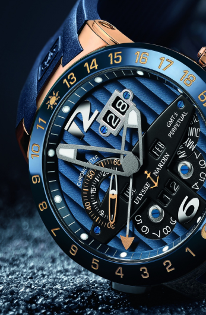

THE BIG BEN STORY
Crafted for those who value every moment.
Big Ben is a luxury watch website concept built around refined typography, expressive imagery and a timeless visual identity.
Inspired by the artistry of mechanical watchmaking, the design celebrates the fine details that transform a timepiece into a statement.
Explore a visual world where tradition meets contemporary elegance.
Explore collectionDESIGN PRINCIPLE
Every detail has a purpose.
From subtle gold accents to carefully balanced whitespace, this concept focuses on creating an elegant and memorable browsing experience.